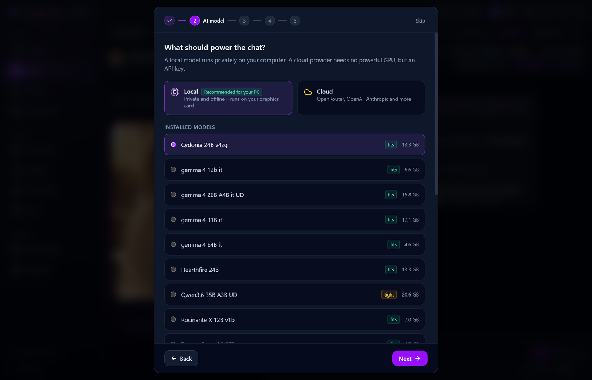

Set up an AI model, meet your first character and learn where to look when you get stuck.
01 / INSTALL
Get the installer for your system
Go to the latest release, expand Assets and select your installer.
Windows 10 or 11
Download …_x64-setup.exe and run it.
Linux
Download the x86-64 AppImage and mark it executable before opening it. On Debian or Ubuntu you can also install the …_amd64.deb package with sudo apt install ./filename.deb, replacing filename.deb with your download.
macOS with Apple silicon
Open the …_aarch64.dmg and drag OtakuSoul to Applications. If macOS blocks the unnotarized app, consult the macOS notes in the README.
02 / FIRST LAUNCH
Choose how the AI runs
The setup assistant lets you choose English, German, Russian or Japanese for the app interface. After picking a theme, select local or cloud AI. You can switch models later from Home → Change AI.
Local AI
After downloading the local models you want to use, you can play fully offline. Start with the setup assistant’s chat model recommendation and add local voice and image models as needed. You can also choose a compatible uncensored language model.
Model downloads and browsing or downloading from the Hub require an internet connection.
Optional cloud AI
A provider runs the model. Choose one in the assistant, connect your account or paste its API key, and test the connection. This is an option for laptops without a dedicated GPU.
Your provider processes the requests and sets its own usage limits and pricing.

The local setup assistant recommends a model based on your hardware.
03 / PLAY
Start a chat or a story
Meet a character. Open Characters, choose a card marked Good to start with and select Chat now. Send a message or use the light bulb for ideas.
Bring in more characters. Open Conversations and start a group chat or invite guests from the group controls. Address a character by name to give them the floor.
Start a story. Open Stage, pick an adventure from the story gallery and select Start story. Choose what to say, do or think. You can also whisper to a companion or give the game master a direction.
Try this. Open a message’s menu and choose Remember this message to save a detail for future chats.
Add content from the Hub
Open Hub in OtakuSoul and browse the curated characters, stories and scenes, avatars or world lorebooks.
Choose an item and use its download or import action. To get a story and its related content together, open a collection and choose Install everything.
Find added stories in Stage and downloaded models in Library → Avatars. If an avatar offers Get it on its page, download it from the creator’s page and import it in the avatar library.
Anyone can contribute to the catalog maintained by the developer and community. To submit a character or story for review, use the share button on a character card or Contribute to the hub in the story menu.
04 / CUSTOMIZE
Speak, listen and illustrate
Hear your characters
Open Settings → Voice. Preview the options under Listen to and compare voices, then choose a voice and set up its speech engine.
Speak into your microphone
Set up speech recognition, then use the microphone control in chat. Allow microphone access in your operating system if prompted.
Generate a scene image
Configure an image model or service in Settings → Images. In a reply’s menu, select This moment as a picture. Use the image card if you want to make it your chat background.
Choose an avatar
Use a portrait or give a character an avatar. The 3D avatar guide walks through supported formats and setup.
05 / TROUBLESHOOTING
When something gets stuck
The AI does not reply
Open Home → Change AI and check the selected model. For cloud AI, test the connection and check your provider account or key. For local AI, check that the model download finished and use the error’s suggested fix if shown.
The local model is slow or does not fit
Try a smaller chat model. If chat works on its own, add image or speech models one at a time to see what fits alongside it. You can also switch chat to a cloud provider.
The microphone or speech output does not work
Check the microphone and output device in your operating system. Test a voice in Settings → Voice and confirm that the speech engine or speech recognition model has finished setting up.
I cannot generate a picture
Open Settings → Images and check which model or provider is selected. Make sure a local model has finished downloading or that the cloud service is connected.
I want to bring in an existing character or chat
Import SillyTavern character cards as PNG or JSON and import lorebooks separately. For an existing conversation, open Conversations and use the import action for a SillyTavern JSONL file.
06 / MORE HELP
Find the right help
Open the question mark in the app’s title bar for First steps and the Glossary. The full getting-started guide covers reply controls, group chats and Stage in more detail.
If the problem persists, include your OS, app version, model or provider and the steps that reproduce it. Remove API keys and private chat text from any screenshots or logs.